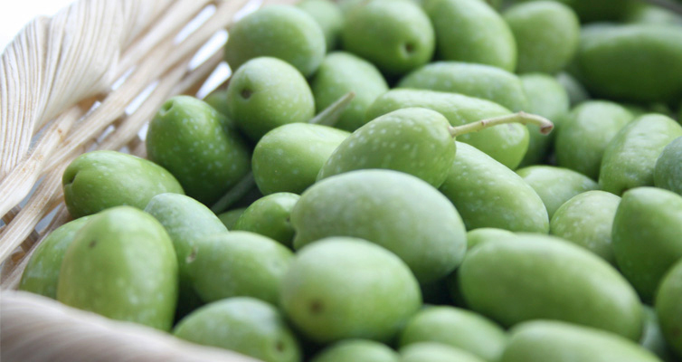

<div id="imagenPpal">
	
	<div id="textoPpal" class="agricultura">
		Basada en gran parte en la producción de almendra y algarroba, intercalado con cultivos de huerta.
		Una importancia especial tiene la producción de aceitunas, con dos almazaras, de las que se obtiene
		un Aceite de Oliva Virgen Extra de extraordinaria calidad y sabor. Éste se puede adquirir en nuestra
		cooperativa agrícola.
	</div>
</div>